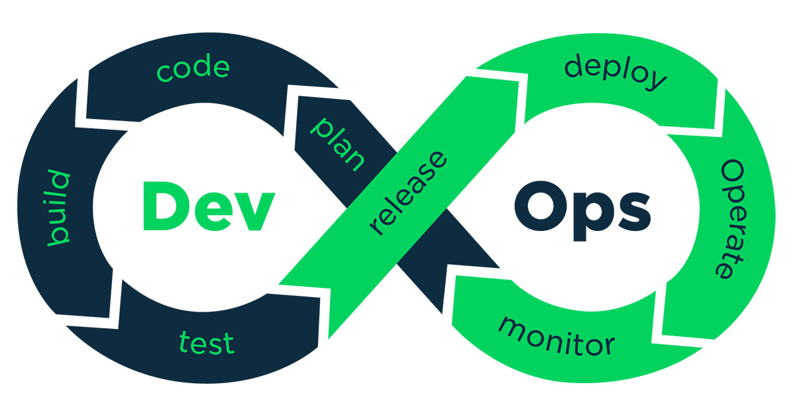

Carreiras para seguir
DevOps
O profissional de DevOps atua simultaneamente nas áreas de sistemas e infraestrutura. Suas funções envolvem um ciclo de planejamento, desenvolvimento, automação e serviço, realizados até obter o produto final. No planejamento, as equipes atuando no projeto decidem quais linguagens usar, que tipo de infraestrutura aplicar, entre outras questões. Por fim, atribuem funções e as metologias ágeis para garantir a sua realização da melhor forma possível. Em seguida, o profissional trabalha no desenvolvimento do projeto, utilizando as ferramentas e linguagens escolhidas previamente.
Nesta fase, ele também trabalha no controle e versionamento de código, na integração contínua do código e na segurança das redes. Na fase de automação, o profissional trabalha com formas de realizar testes, criar builds e entregar códigos sem a interferência humana, para prevenir erros, agilizar processos e detectar possíveis problemas, através da automação de testes, de builds, de entrega e distribuição, etc. Na última fase, o serviço, o profissional realiza a entrega contínua do produto final de forma confiável, coleta e monitora os processos automatizados (e, se necessário, realiza a otimização deles). Ele também atende às solicitações e feedbacks do cliente, alterando o produto para se adequar às suas necessidades. E o processo se repete, até que se obtenha o resultado esperado.